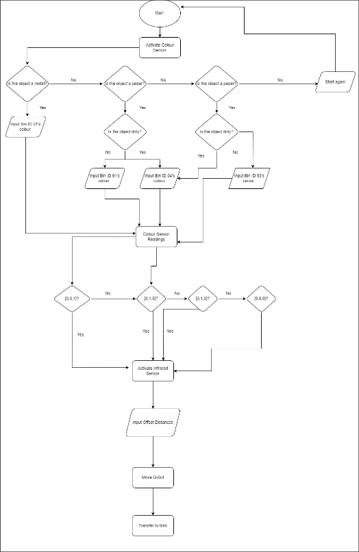

In this project, I, as a member of the coding subteam, was responsible with my partner with designing and creating a model program that controls a QArm and QBot with dispensing and sorting waste. The project objectives are as follows:
The final result of this project was a program that managed to accurately and properly dispense waste with minimal bugs and errors. The following is my flowchart for the transfer function which controlled and oversaw the transfer of waste:
My role, within this project, was developing and writing the code. Namely, my role was developing a system for accurately determining the type of bin present and having the bot line following technology work as planned.
Our code had some flaws. Most notably, during the hardware simulation, I realized that the speed of the bot causes the bot to lose track of the line and fall off path. Moreover, in the simulated environment, the bot would sometimes fail to accurately measure the distance to the bin. While, at the time, I assumed that there were some errors in the environment itself given that the code itself makes sense, in retrospect, if I slowed down the speed of the bot in the simulation, perhaps it would have been a lot more accurate.
The main tool in this project was Python. Moreover, for this project, I chose to break away from my usual choice of neovim and chose instead to learn emacs. While this proved to be a challenge at first given my reliance on vim keybindings after years of use, I eventually managed to create a workflow that was almost as efficient as my workflow using vim.